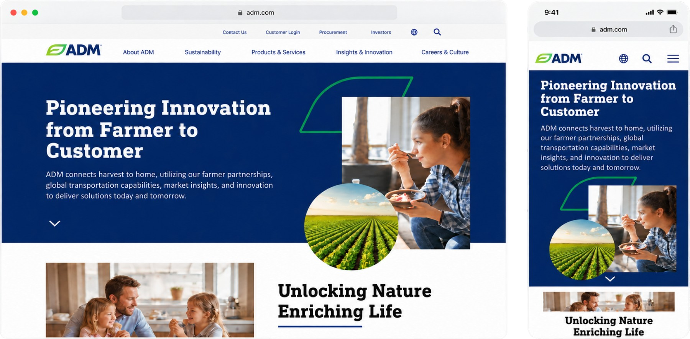
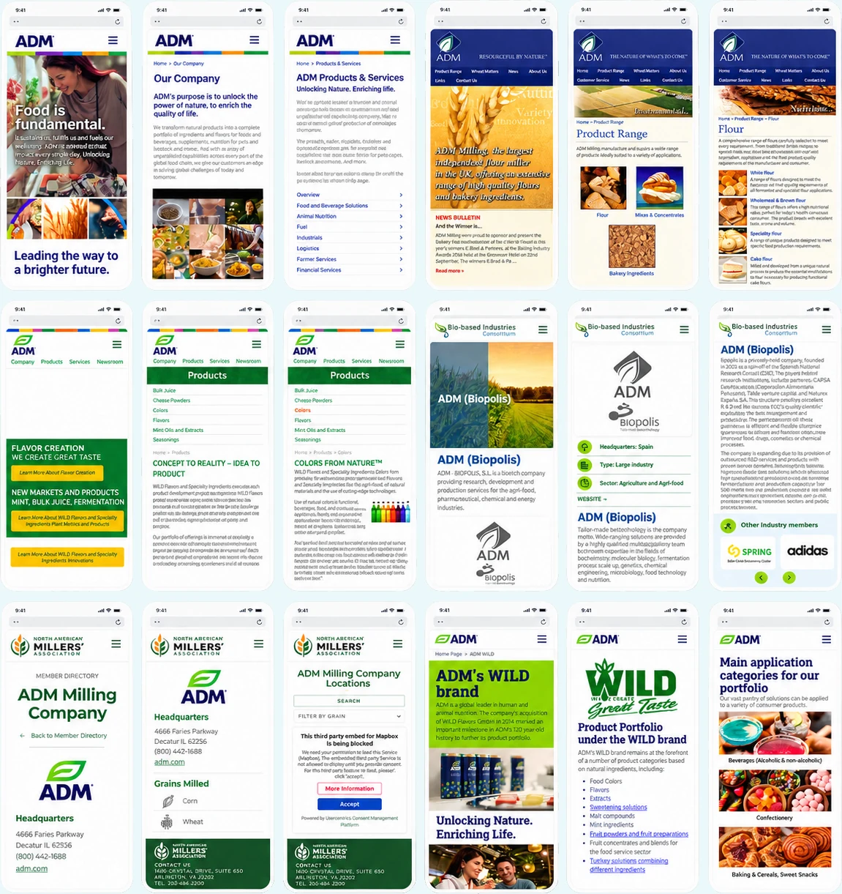
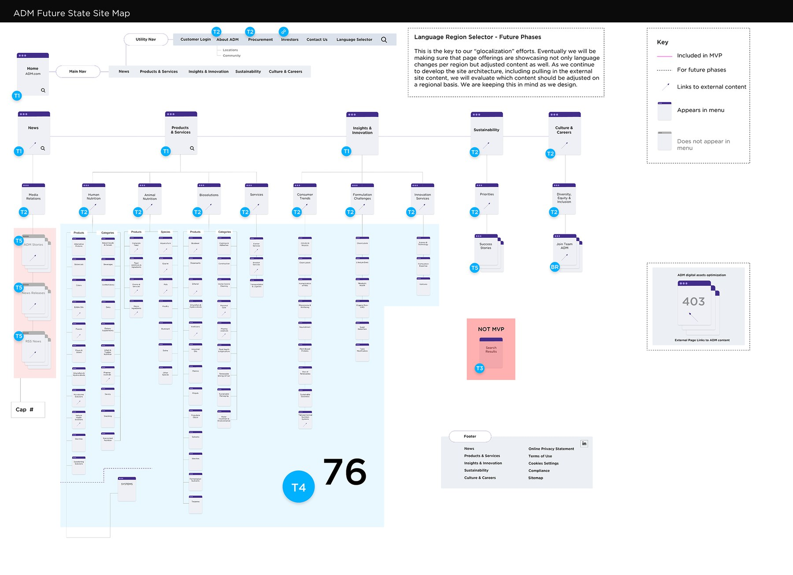
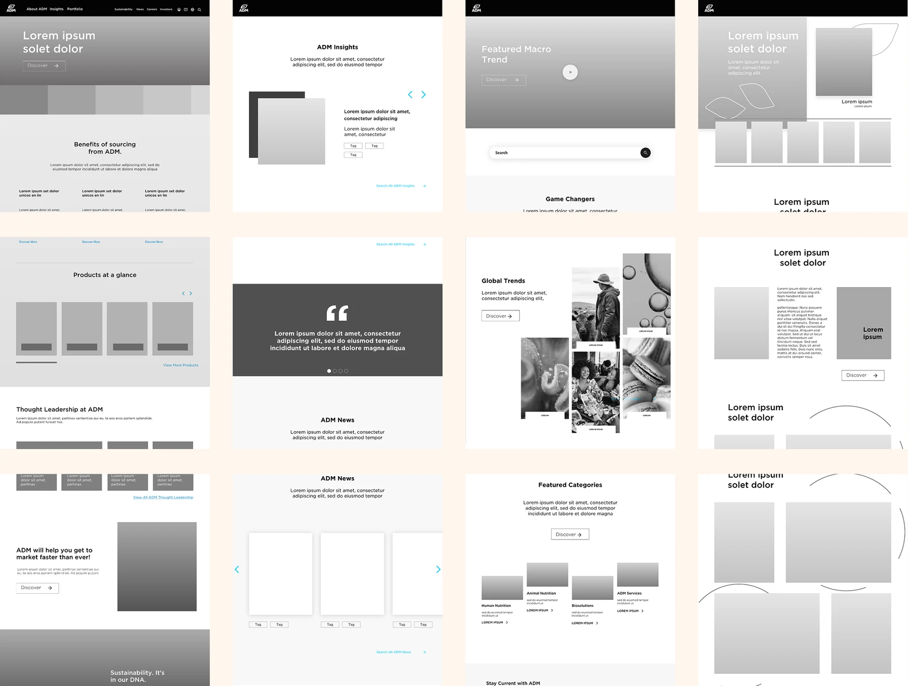
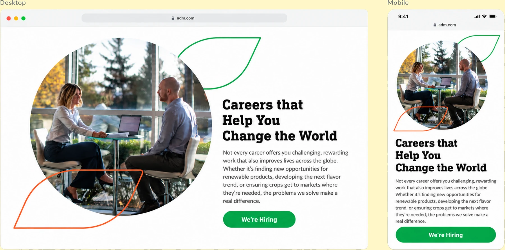
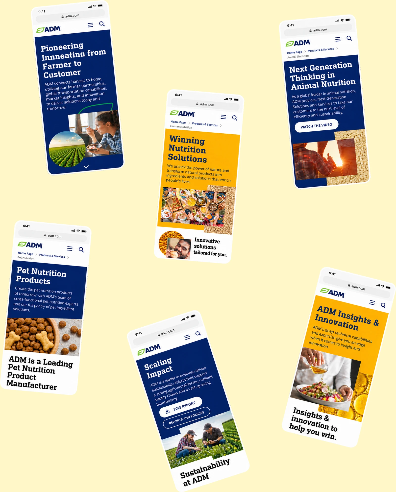

ADM
One company, two hundred countries.

- Problem
- Years of independent growth had left a digital estate across 200+ countries with fragmented content, competing navigation and sprawling child sites that no structure could hold together.
- My role
- Design Director. Content audit, future-state information architecture, the design system, and UI direction across the corporate site, the product brands and the regional sites.
- Key decisions
- Build a content model that survives translation, so every market shares one foundation while keeping local relevance, and define the site in atomic components rather than page designs.
- Result
- One architecture and one reusable component set in place of a sprawl of independently grown sites, with the child brands brought onto a shared platform.
- 3,000+ → <1,000pages after consolidation
- 12page templates
- 60+child sites brought in
Overview
A global food and nutrition business whose digital estate had grown faster than any structure could hold. We audited it, restructured it, and built the system to keep it coherent.
The challenge
Scale had become the problem.
Years of independent growth created fragmented content, competing navigation, and sprawling child pages. We built a unified strategy to bring every market into one cohesive experience.

One Major Opportunity
A content model that survives translation. We needed to reimagine the entire sitemap. The new structure gave every market a shared foundation while preserving local relevance.

What I led
- Content audit. Catalogued the estate across the corporate site, the product brands and the regional sites to establish what actually existed before proposing what should.
- Information architecture. Designed the future-state sitemap, including how each section carries its language and region variants.
- Design system. Used atomic design to define the building blocks, so 60+ child sites could be served by twelve templates instead of their own designs.
- UI direction. Set and held the visual language from the home page through insights, products and careers.
- Cross-market alignment. Kept a single shared foundation defensible against the pull toward local exceptions.
Architecture
With a content strategy and site structure built to bring child brands together, we moved into wireframing, using atomic design to define the new site’s building blocks.

The outcome
Over three thousand pages were consolidated to fewer than a thousand, and more than sixty independently grown child sites were brought onto a shared platform. Twelve templates and one component set now carry the estate, so a new market or product launches from the same foundation instead of starting another site.


Next project
Under Armour
What could a store do for an athlete?